GOLD RUSH · Practical 1 · Easy
Coin Garden
A small, friendly garden. Four glowing flower beds each hold a coin, and more coins lead you to the exit. Only one slow Slime walks around. You practise the basic skills: copy a scene, shrink the walls, place and snap pieces, and move markers.
1Goal and values
Goal
Build a 24 × 24 m open level with 8 coins, 1 Slime and no power-ups. A new player must win it on the first try.
You learn: Save As a scene, move and delete wall pieces, snapping, CoinSpots, one monster, LevelDef.
What you need: Practicals overview (read steps 1–11) and a working Level1.
The LevelDef values (you type them in step 11):
| Field | Value |
|---|---|
title | "Coin Garden" |
subtitle | "Pick the golden flowers" |
scene | "Level5" |
size | 24 (24 × 24 m, Arena Half 12) |
coins | 8 |
| monsters | patrollers = 1 (Slimes) |
enemySpeed | 0.9f |
parTime | 35 seconds (tune it in the play test) |
lives | 3 |
2The map
This is your level from above. North (+Z) is up. One grid square is 2 m, like the floor tiles. The numbers on the coins are the CoinSpot numbers.
The player sees coin 5 straight ahead. The beds make a square; the last coins wait at the gate. The Slime waits near the gate, far from the start, so the player has time to look around first.
3Make the scene
- Open
Scenes/Level1. File → Save As… →Assets/GoldRush/Scenes→ nameLevel5→ Save. - Check the title bar: it says Level5.
- Rename the root
Level 1 - Training YardtoLevel 5 - Coin Garden. - In its Level Scene component, set Arena Half =
12. - Save.
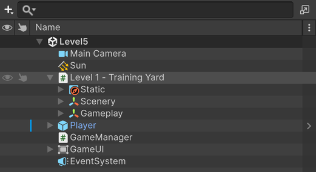

Level 5 - Coin Garden with Arena Half = 12.4Clear out
Delete these (select, then Delete):
- All 17 children of
Static/Obstacles. (Click the first, Shift-click the last.) Keep theObstaclesgroup itself. Gameplay/Monsters/Slime 2. KeepSlime 1.Gameplay/PowerUps/PowerUp Magnet(andPowerUp Speed/PowerUp Ghostif you kept the test power-ups of Phase 8). This level has no power-ups.
Keep the 6 CoinSpots, the walls, the lamps, PlayerSpawn, ExitGate, GameManager, Player, the camera and the UI.

Obstacles is empty, Monsters has only Slime 1, PowerUps is empty. Walls, lamps, gate and the 6 CoinSpots are still there.5Shrink the walls
Level1 is 32 m wide. The garden is 24 m wide, so every wall moves 4 m inwards and loses a piece. You keep using the same wall groups from Phase 3.
WallSouth: Position0, 0, -12.5. It has fourWall_8mchildren. Delete the one at X12. Set the others to X-8,0,8.WallEastandWallWest: the same. Position12.5, 0, 0and-12.5, 0, 0(Rotation stays0, 90, 0). Delete one child, the others at X-8,0,8.WallNorth: Position0, 0, 12.5. Delete the twoWall_4m. Move the twoWall_8mto X-8and8. The 8 m gap for the gate is still in the middle.Corners: move the 4 pillars to±12.5, 0, ±12.5.
| Group | Position | Rotation | Children (local X) |
|---|---|---|---|
WallSouth | 0, 0, -12.5 | 0, 0, 0 | Wall_8m at X -8 · Wall_8m at X 0 · Wall_8m at X 8 |
WallNorth | 0, 0, 12.5 | 0, 0, 0 | Wall_8m at X -8 · Wall_8m at X 8 |
WallEast | 12.5, 0, 0 | 0, 90, 0 | Wall_8m at X -8 · Wall_8m at X 0 · Wall_8m at X 8 |
WallWest | -12.5, 0, 0 | 0, 90, 0 | Wall_8m at X -8 · Wall_8m at X 0 · Wall_8m at X 8 |
Corners | 4 × Pillar | – | -12.5, 0, -12.5 · 12.5, 0, -12.5 · -12.5, 0, 12.5 · 12.5, 0, 12.5 |
GateBlocker | 0, 2.5, 13.25 | – | Box Collider, Size 8, 5, 1. You move it in step 10. |
ExitGate | 0, 0, 12 | 0, 0, 0 | In the middle of the gap. Not static. You move it in step 10. |
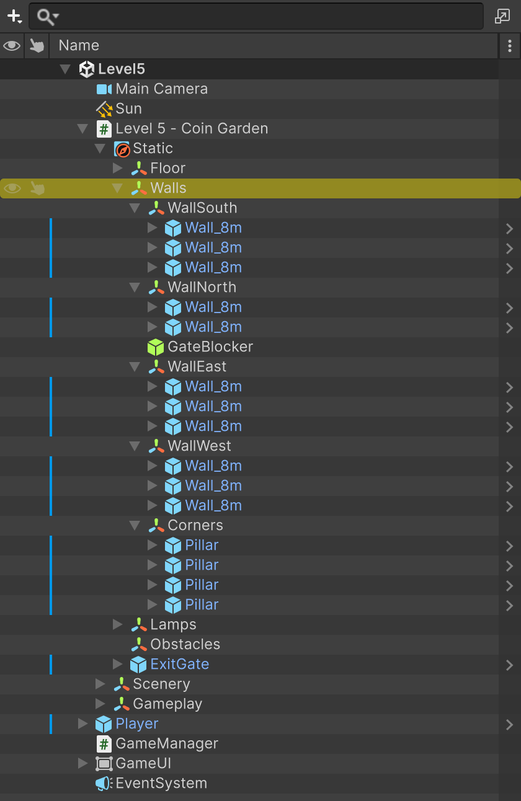
Wall_8m and 4 pillars.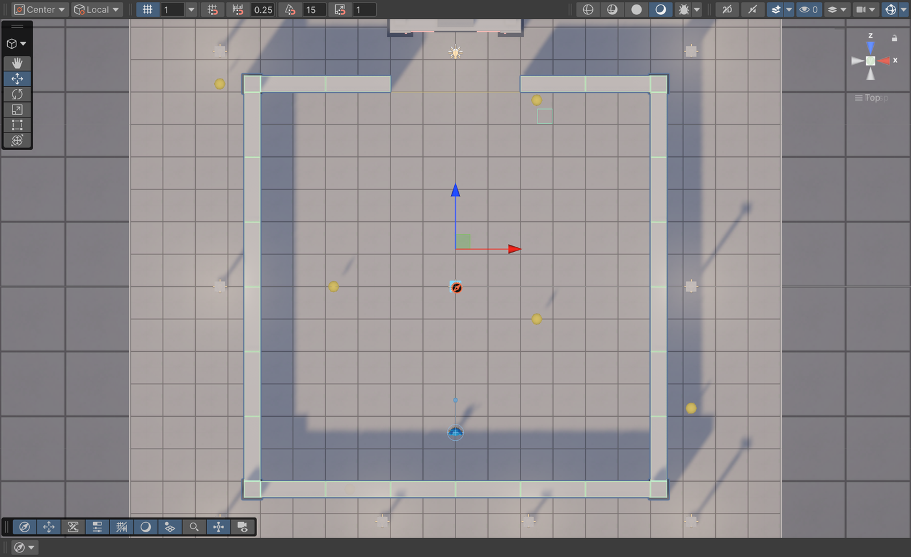
6Lamps
Move the 8 lamps of Static/Lamps inwards. Every lamp stays 1.5 m from the walls.
| # | Position | Where |
|---|---|---|
| 1–4 | -10.5, 0, -10.5 · 10.5, 0, -10.5 · -10.5, 0, 10.5 · 10.5, 0, 10.5 | Corners |
| 5–6 | -10.5, 0, 0 · 10.5, 0, 0 | West and east, middle |
| 7–8 | -4.5, 0, -10.5 · 4.5, 0, -10.5 | Left and right of the start |
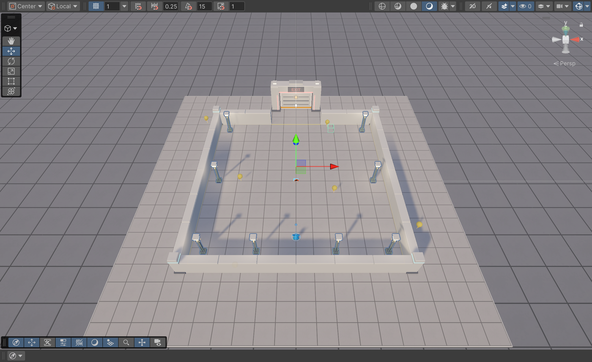
7Garden pieces
The garden is open: few blocks, lots of space. The four cyan floor pads are the flower beds. They have no collider, so you can walk on them.
Drag each prefab onto its parent in the Hierarchy and type the values. Scale stays 1, 1, 1.
| # | Prefab | Parent | Position | Rot Y | Note |
|---|---|---|---|---|---|
| 1 | AccentBlock_Orange | Static/Obstacles | 0, 0, 1 | 0 | Centre landmark |
| 2 | Block_2x2x2 | Static/Obstacles | -4, 0, 9 | 0 | Gate entrance, left |
| 3 | Block_2x2x2 | Static/Obstacles | 4, 0, 9 | 0 | Gate entrance, right |
| 4 | Barrier_Orange | Static/Obstacles | -8, 0, 0 | 90 | Low hedge, west |
| 5 | Barrier_Orange | Static/Obstacles | 8, 0, 0 | 90 | Low hedge, east |
| 6 | AccentBlock_Teal | Static/Obstacles | -8, 0, -8 | 0 | |
| 7 | AccentBlock_Red | Static/Obstacles | 8, 0, -8 | 0 | |
| 8 | FloorPad_Cyan | Static/Floor | -6, 0, -3 | 0 | Flower bed (no collider) |
| 9 | FloorPad_Cyan | Static/Floor | 6, 0, -3 | 0 | Flower bed |
| 10 | FloorPad_Cyan | Static/Floor | -6, 0, 5 | 0 | Flower bed |
| 11 | FloorPad_Cyan | Static/Floor | 6, 0, 5 | 0 | Flower bed |
FloorPad_Cyan by typing -6, 0, -3. For the other three, press Ctrl+D and drag with Ctrl / Cmd held (snap 0.5). Check the numbers in the Inspector afterwards.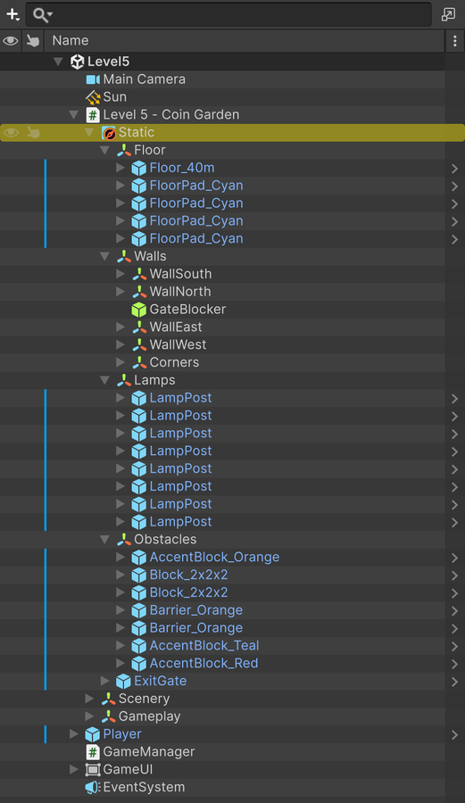
FloorPad_Cyan in Static/Floor, 7 pieces in Static/Obstacles.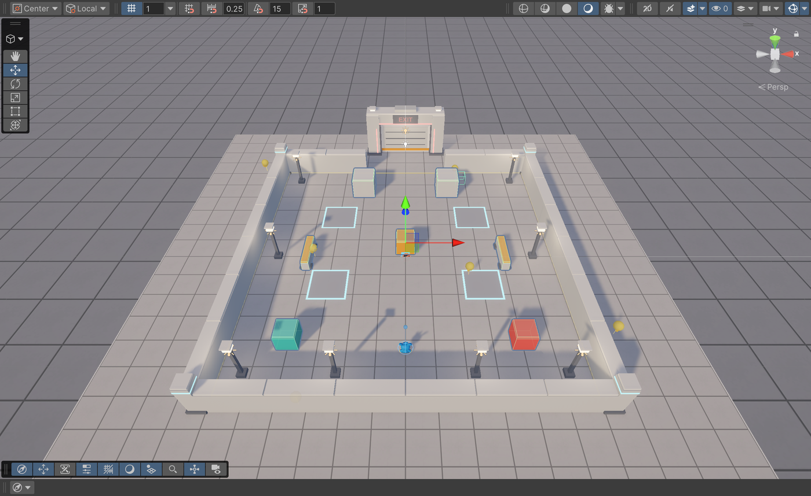
8Coins
The 6 CoinSpots from Level1 are still there. Move them and add 2 more.
You need 8 CoinSpots, each with a Coin inside (local position 0, 1, 0).
- Open
Gameplay/Coins. Keep the CoinSpots you have and move them to the new positions. - Need more? Select a CoinSpot (with its Coin) and press Ctrl+D / Cmd+D. Rename it with the next number.
- Delete CoinSpots you do not need.
| Marker | Position | Why here |
|---|---|---|
CoinSpot 1 | -6, 0, -3 | On a flower bed |
CoinSpot 2 | 6, 0, -3 | On a flower bed |
CoinSpot 3 | -6, 0, 5 | On a flower bed |
CoinSpot 4 | 6, 0, 5 | On a flower bed |
CoinSpot 5 | 0, 0, -2 | First coin: you see it from the start |
CoinSpot 6 | 0, 0, 5 | Between the beds, on the way to the gate |
CoinSpot 7 | -10, 0, 8 | Corner reward, left of the gate |
CoinSpot 8 | 10, 0, 8 | Corner reward, right of the gate, close to the Slime |
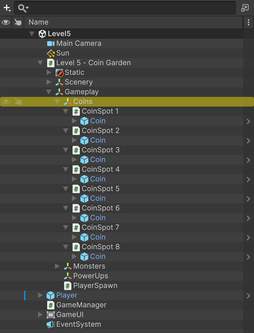
Coin inside.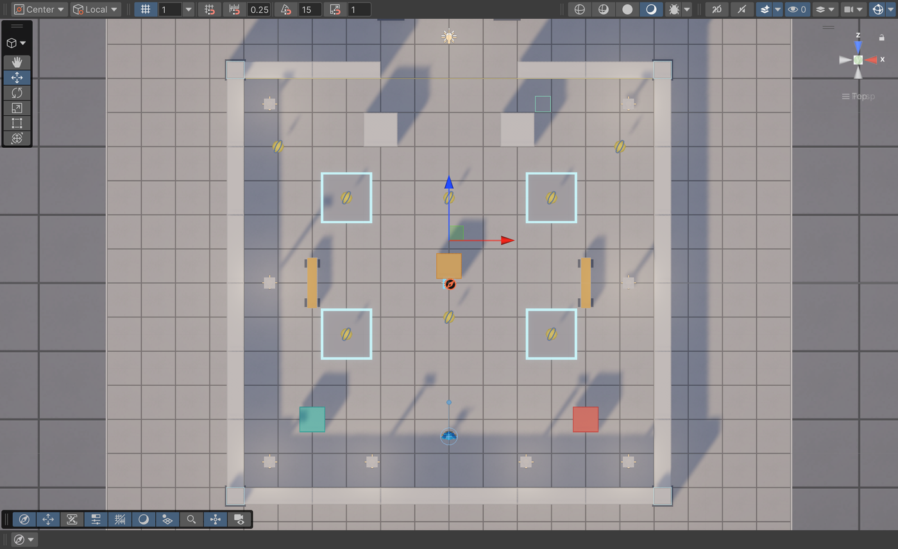
9Monsters
One Slime is enough. It is slow (1.5 m/s) and only sees 8.5 m in front of it. But it wanders around the whole time, also during the intro, so it starts far away from the player: in a 24 m garden, 10 m is not enough (in our test a Slime at 3, 0, 3 caught the player 2 seconds after the start).
Monsters go into Gameplay/Monsters. Drag the prefab from Prefabs/Gameplay onto the group, type the position, and rename it. Delete the old Slimes you do not need.
| Name | Prefab | Position | Note |
|---|---|---|---|
Slime 1 | Monster_Slime | 7, 0, 8 | Keep Slime 1, move it (you deleted Slime 2 in step 4). 18 m from the start, near coin 8. |
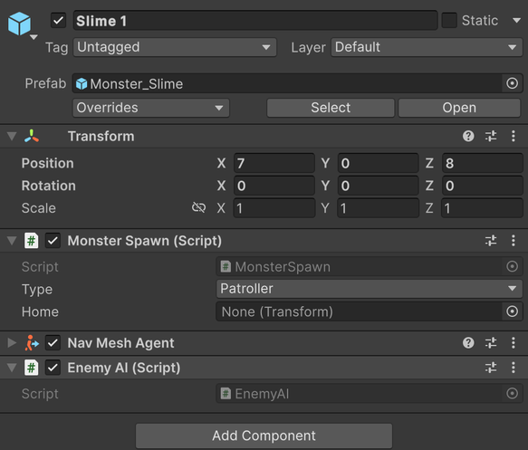
Slime 1 at 7, 0, 8: Monster Spawn (Patroller), Nav Mesh Agent and Enemy AI.10Start, gate and NavMesh
- Select
Gameplay/PlayerSpawn. Position0, 0, -9, Rotation0, 0, 0(looks north, to the gate). - Select
Static/ExitGate. Position0, 0, 12, Rotation0, 0, 0. - Select
Static/Walls/GateBlocker. Position0, 2.5, 13.25. Box Collider Size8, 5, 1. - Select
Static. In NavMesh Surface, click Bake. Look at the blue area: it must reach every coin and the gate. (The blue strip outside the walls is the rest ofFloor_40m. Nobody can get there, so it does not matter.) - Save.
The start and the gate are the same as in Level1, only the gate and blocker move 4 m south.
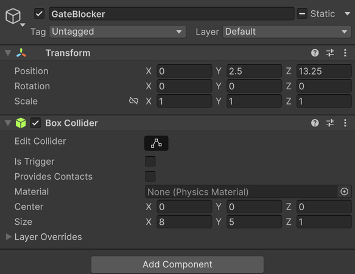
GateBlocker at 0, 2.5, 13.25 with a Box Collider of 8, 5, 1.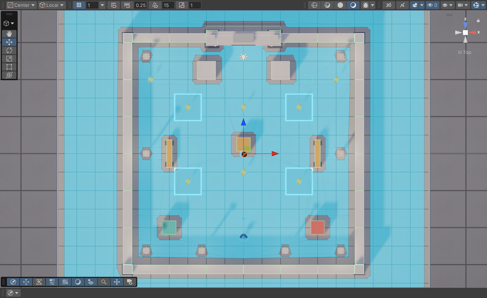
11LevelDef and Build Profiles
- Open
Assets/GoldRush/Scripts/Core/Data.cs. FindLevels.All. - Add this line at the end of the list (after the last level you have):
new LevelDef { title = "Coin Garden", subtitle = "Pick the golden flowers", seed = 505, scene = "Level5", size = 24, coins = 8, patrollers = 1, enemySpeed = 0.9f, parTime = 35, lives = 3 },- Save the file. Wait for Unity to compile. No red errors.
- File → Build Profiles → Scene List: drag in
Scenes/Level5, underLevel4. Check it is ticked.
Not sure? Read Practicals, step 6 and 7.

Level5 is in the Scene List, under Level4, and ticked.12▶ Play test
- Open
Level5and press ▶ Play. - Play the level to the end. Then play it 2 more times and write down your times.
- Open
MainMenu→ Play → LEVELS. Find the COIN GARDEN card.
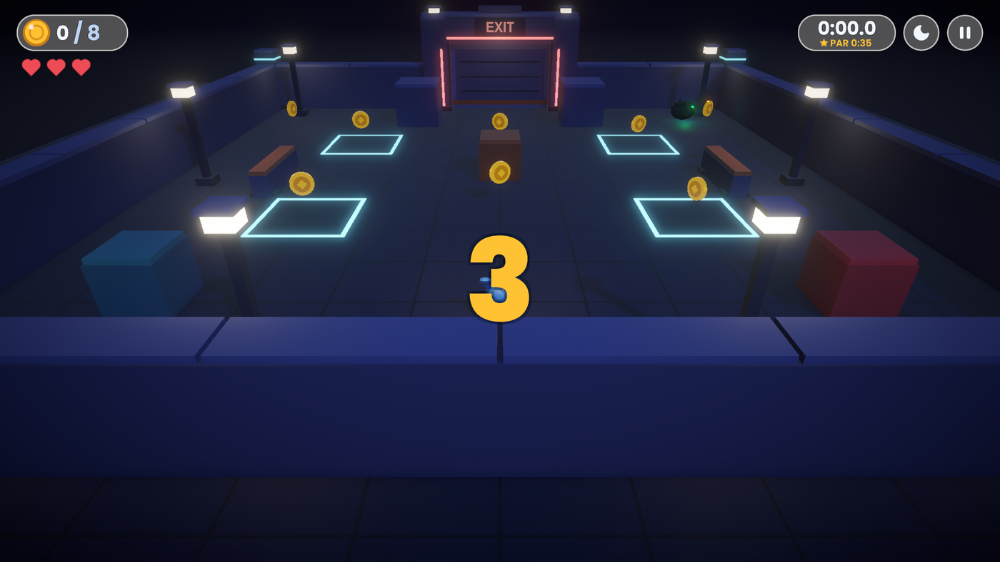
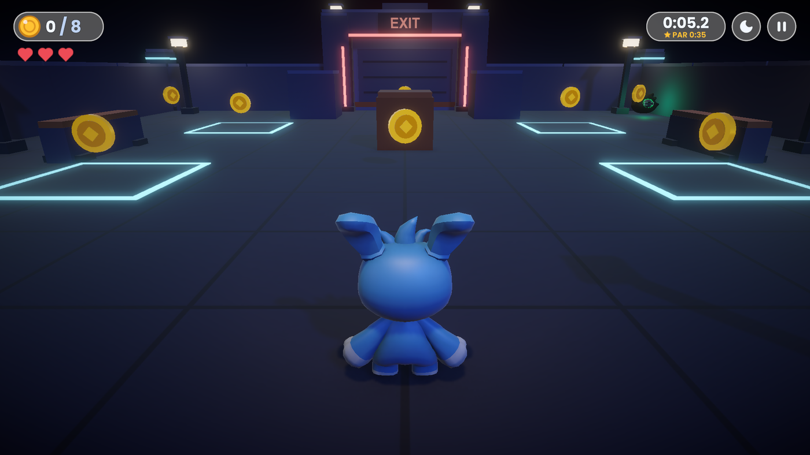
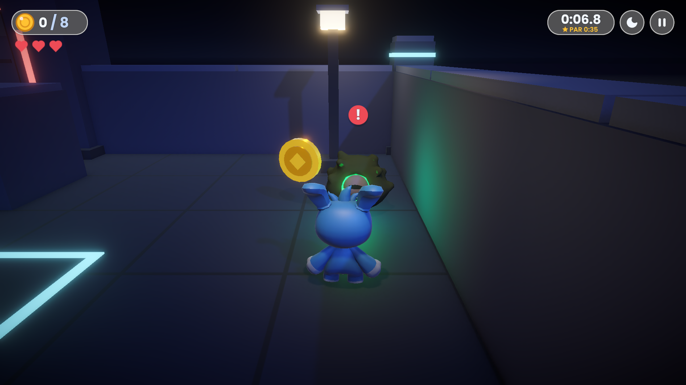
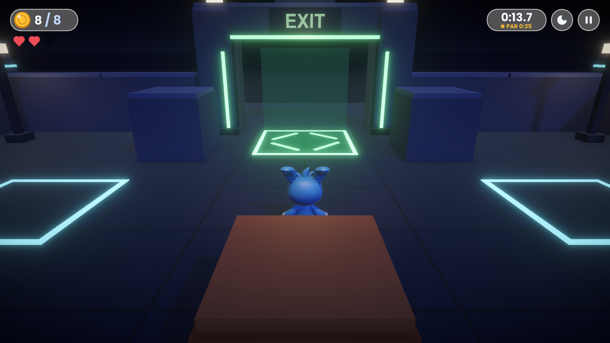
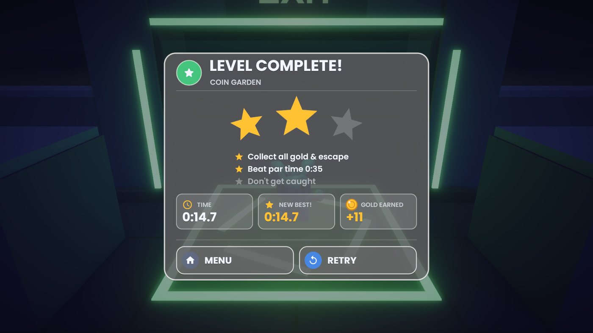
▶ Play test: check these
- You see coin 5 and the gate area from the start.
- The Slime does not see you at the start.
- You can walk around both orange hedges and over the flower beds.
- You can win without being hit.
- The intro says COIN GARDEN and "Collect all 8 gold".
- The gate opens after the last coin, and you win when you run through it.
- No red errors in the Console.
The card: while it is locked, it shows 5, COIN GARDEN, a lock and "Clear level 4". You unlock it when you win Level 4. Then it shows "Pick the golden flowers" and "8 GOLD TO FIND" (after a win: your best time). With the updated menu the cards are in two rows; with the old menu it hides under DAILY RUSH (see Practicals, step 8).
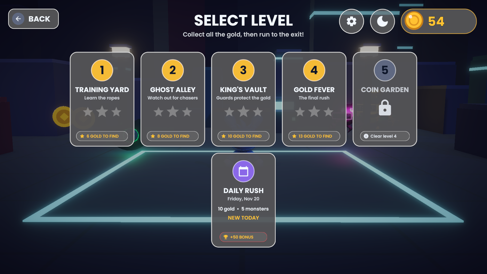
Tune the par time: best time + 25 %, rounded to 5 s. Change parTime in Data.cs.
13Make it harder
- Add a second
Monster_Slimeat-6, 0, 9(near coin 7). - Set
enemySpeed = 1fandlives = 2. - Lower
parTimeto25. - Add a
PowerUp Speedat0, 0, -6and make the par time even shorter. - Move coin 5 behind the centre block, so the player has to search.
14Self-check
Be honest. Better: let a friend play and fill it in for you.
| Check | 1 point: OK | 2 points: good | 3 points: great |
|---|---|---|---|
| Works | The level loads from the menu card. The gate opens after the last coin. | All coins can be reached. No red errors in the Console. The 8 coins are on the beds and at the gate, like the map. | The par time and the coin number in Data.cs match the level. |
| Fun | There is something to do on the way to every coin. | The Slime makes you stop and look at least once. | You want to play it again to beat the par time. |
| Fair | No monster can see you at the start. | The Slime starts at least 10 m from the start. | A friend can win it on the 2nd or 3rd try, without your help. |
| Looks good | Nothing floats or sinks into the floor. | All lamps are inside the walls. The beds are in a neat square. | The level has a clear theme. Lamps and colours point the way. |
Give yourself 1–3 points per row. 8 points or more: well done. Less? Fix the lowest row first, then test again.